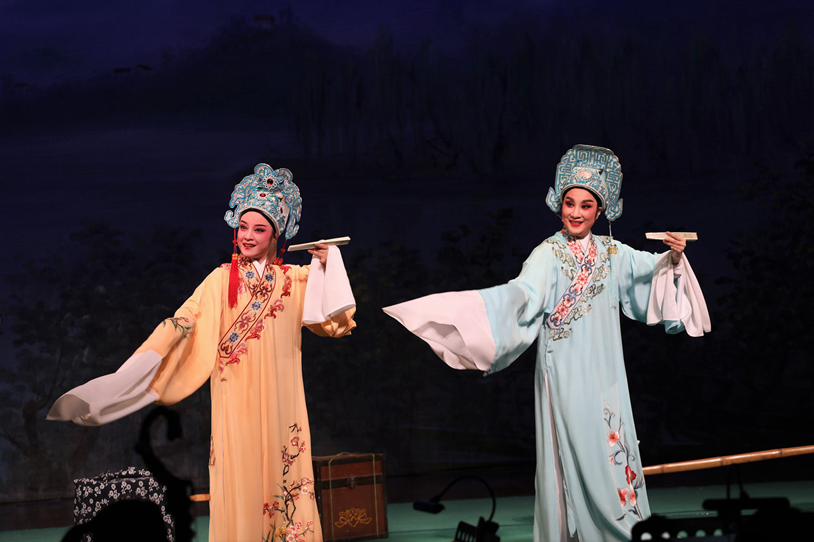
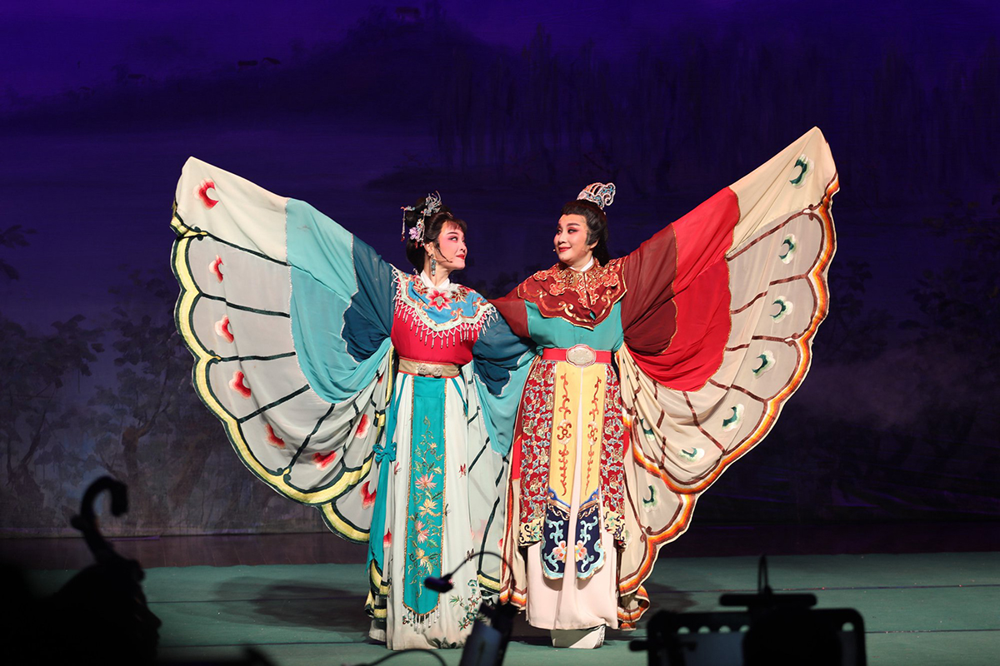
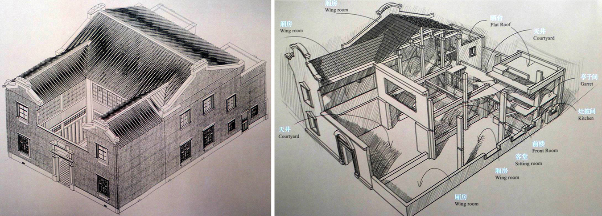
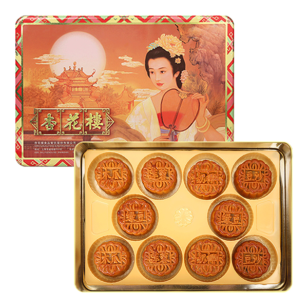
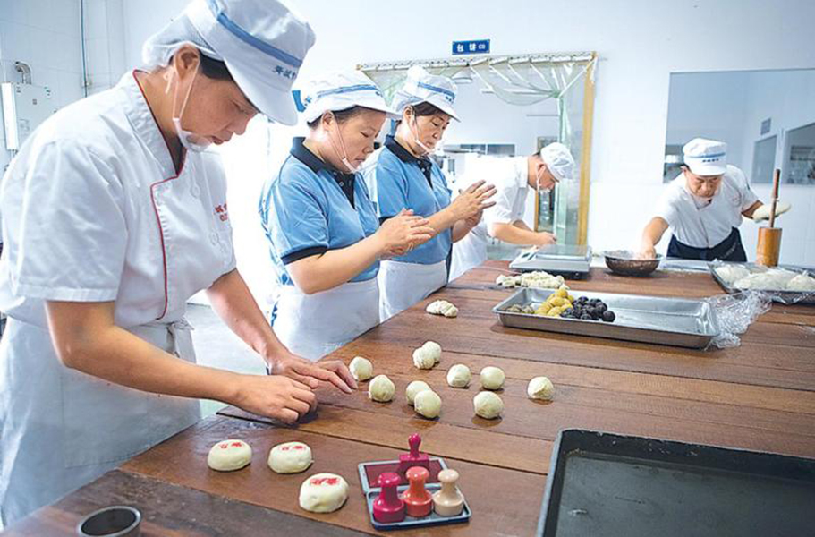

Shanghai Opera
 It took more than 200 years, from the earliest Huagu Opera to contemporary Shanghai Opera. For more than 200 years, the Shanghai Opera House's development has been closely related to Shanghai's social, cultural and economic changes. From "Bangtan" and "Divine Comedy" to the naming of the Shanghai Opera House; from teahouse bookstores and playgrounds to the formation of integrated art in large theaters. The development track of Shanghai opera records the history of Shanghai's construction, development, and prosperity, an international metropolis with a unique cultural carrier. As the most representative opera genre in Shanghai culture, it is a precious piece of Chinese opera. Artistic heritage.
Living Customs in Shikumen Lanes
Shikumen is a unique residential style in Shanghai, and it is also a substantial reason for the formation of its unique lifestyle and artistic style in Shanghai. They constitute a large number of Shikumen artistic and custom statues with distinctive Shanghai folk culture, and Correspondingly, the cultural space forms full of various civic lifestyles. Specifically, Shanghai’s Shikumen customs mainly include the following aspects:
- Shikumen’s traditions of life, such as living style, neighborhood relations, secular slang.
- Shikumen’s business customs as street vendors in alleys, Lane hawking.
- Shikumen entertainment custom forms, such as alley opera, alley opera, alley games, etc.
The lifestyle patterns produced in Shikumen Lanes are a lifestyle full of Shanghainese characteristics. They are made under the unique living environment and cultural background of Shanghainese. At the same time, they are also the concrete cultural psychology and values of Shanghai residents.
Xinghualou Cantonese Mooncake Making Skills
 The 15th day of the eighth lunar month is the traditional Mid-Autumn Festival, and eating mooncakes is a Chinese's conventional food custom. Xinghualou moon cakes are well- known for their distinctive features, such as soft and thin crusts and decadent fillings. The critical element of their taste is the concentration of the syrup. As early as 1928, Xinghualou began trial production of moon cakes. It carefully studied the color, skin, filling core, ingredients, baking, and moon cakes taste.